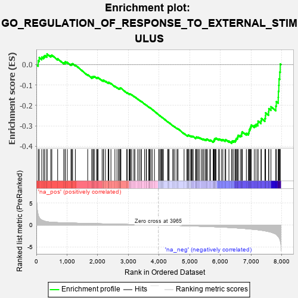
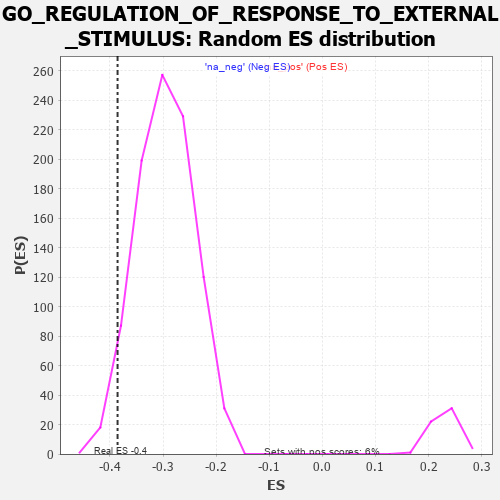

| | | Dataset | 7d |
| Phenotype | NoPhenotypeAvailable |
| Upregulated in class | na_neg |
| GeneSet | GO_REGULATION_OF_RESPONSE_TO_EXTERNAL_STIMULUS |
| Enrichment Score (ES) | -0.38565674 |
| Normalized Enrichment Score (NES) | -1.3060707 |
| Nominal p-value | 0.03821656 |
| FDR q-value | 0.4655194 |
| FWER p-Value | 1.0 |
Table: GSEA Results Summary

Fig 1: Enrichment plot: GO_REGULATION_OF_RESPONSE_TO_EXTERNAL_STIMULUS
Profile of the Running ES Score & Positions of GeneSet Members on the Rank Ordered List
| PROBE | GENE SYMBOL | GENE_TITLE | RANK IN GENE LIST | RANK METRIC SCORE | RUNNING ES | CORE ENRICHMENT | | 1 | RAC2 | | | 60 | 2.442 | 0.0195 | No |
| 2 | UBE2K | | | 94 | 1.739 | 0.0346 | No |
| 3 | FOXF1 | | | 176 | 1.136 | 0.0368 | No |
| 4 | DCST1 | | | 237 | 0.959 | 0.0398 | No |
| 5 | HGF | | | 276 | 0.870 | 0.0446 | No |
| 6 | DAPK2 | | | 343 | 0.754 | 0.0446 | No |
| 7 | CNOT7 | | | 348 | 0.750 | 0.0524 | No |
| 8 | LRP1 | | | 470 | 0.648 | 0.0441 | No |
| 9 | MYOD1 | | | 504 | 0.628 | 0.0468 | No |
| 10 | XRCC6 | | | 694 | 0.560 | 0.0289 | No |
| 11 | HMGB2 | | | 892 | 0.507 | 0.0093 | No |
| 12 | MATR3 | | | 937 | 0.498 | 0.0092 | No |
| 13 | PDCD4 | | | 941 | 0.497 | 0.0143 | No |
| 14 | HMGB4 | | | 1008 | 0.482 | 0.0112 | No |
| 15 | SRC | | | 1128 | 0.459 | 0.0011 | No |
| 16 | PSMD7 | | | 1152 | 0.454 | 0.0032 | No |
| 17 | PSMD2 | | | 1181 | 0.450 | 0.0046 | No |
| 18 | FNTB | | | 1270 | 0.436 | -0.0018 | No |
| 19 | BACE1 | | | 1673 | 0.360 | -0.0493 | No |
| 20 | PSMD4 | | | 1811 | 0.335 | -0.0631 | No |
| 21 | ABR | | | 1812 | 0.335 | -0.0594 | No |
| 22 | TRIM5 | | | 1852 | 0.327 | -0.0607 | No |
| 23 | PSMD6 | | | 1858 | 0.326 | -0.0578 | No |
| 24 | PAK3 | | | 1889 | 0.322 | -0.0580 | No |
| 25 | CCR4 | | | 1959 | 0.312 | -0.0634 | No |
| 26 | GPX4 | | | 1989 | 0.306 | -0.0637 | No |
| 27 | RAF1 | | | 2011 | 0.303 | -0.0630 | No |
| 28 | PSME4 | | | 2143 | 0.285 | -0.0766 | No |
| 29 | SYK | | | 2186 | 0.278 | -0.0789 | No |
| 30 | C1QBP | | | 2189 | 0.278 | -0.0761 | No |
| 31 | PSMF1 | | | 2251 | 0.268 | -0.0809 | No |
| 32 | ANO6 | | | 2339 | 0.255 | -0.0892 | No |
| 33 | MIF | | | 2357 | 0.252 | -0.0886 | No |
| 34 | SIN3A | | | 2361 | 0.251 | -0.0862 | No |
| 35 | MET | | | 2430 | 0.240 | -0.0922 | No |
| 36 | PSMD5 | | | 2560 | 0.218 | -0.1063 | No |
| 37 | PUM2 | | | 2627 | 0.209 | -0.1125 | No |
| 38 | SASH1 | | | 2682 | 0.201 | -0.1171 | No |
| 39 | DSCAM | | | 2689 | 0.200 | -0.1157 | No |
| 40 | SLIT2 | | | 2724 | 0.195 | -0.1179 | No |
| 41 | RORA | | | 2730 | 0.193 | -0.1164 | No |
| 42 | CUL1 | | | 2735 | 0.193 | -0.1147 | No |
| 43 | FNTA | | | 2755 | 0.190 | -0.1150 | No |
| 44 | NMT2 | | | 2947 | 0.158 | -0.1378 | No |
| 45 | BTK | | | 2958 | 0.156 | -0.1373 | No |
| 46 | WNT4 | | | 3023 | 0.146 | -0.1439 | No |
| 47 | UFL1 | | | 3041 | 0.144 | -0.1444 | No |
| 48 | ABCE1 | | | 3051 | 0.143 | -0.1440 | No |
| 49 | PROS1 | | | 3070 | 0.141 | -0.1448 | No |
| 50 | GPX1 | | | 3109 | 0.135 | -0.1481 | No |
| 51 | PSMD9 | | | 3179 | 0.125 | -0.1556 | No |
| 52 | AP1G1 | | | 3210 | 0.121 | -0.1581 | No |
| 53 | SMAD3 | | | 3303 | 0.105 | -0.1687 | No |
| 54 | TAB1 | | | 3351 | 0.097 | -0.1736 | No |
| 55 | MED1 | | | 3405 | 0.089 | -0.1794 | No |
| 56 | SETD6 | | | 3420 | 0.087 | -0.1802 | No |
| 57 | PQBP1 | | | 3526 | 0.072 | -0.1929 | No |
| 58 | GPR18 | | | 3578 | 0.063 | -0.1987 | No |
| 59 | MAPK3 | | | 3589 | 0.062 | -0.1993 | No |
| 60 | SKP1 | | | 3663 | 0.049 | -0.2081 | No |
| 61 | ABCD1 | | | 3677 | 0.047 | -0.2093 | No |
| 62 | CD180 | | | 3686 | 0.046 | -0.2098 | No |
| 63 | DHX9 | | | 3693 | 0.044 | -0.2101 | No |
| 64 | SYT11 | | | 3732 | 0.036 | -0.2145 | No |
| 65 | SBNO2 | | | 3774 | 0.032 | -0.2194 | No |
| 66 | FEM1A | | | 3847 | 0.021 | -0.2284 | No |
| 67 | VPS35 | | | 3989 | -0.006 | -0.2464 | No |
| 68 | DDX58 | | | 3998 | -0.007 | -0.2473 | No |
| 69 | MCPH1 | | | 4039 | -0.014 | -0.2523 | No |
| 70 | ROBO2 | | | 4066 | -0.018 | -0.2554 | No |
| 71 | CSF1 | | | 4074 | -0.019 | -0.2561 | No |
| 72 | CHID1 | | | 4099 | -0.023 | -0.2589 | No |
| 73 | MTOR | | | 4114 | -0.025 | -0.2604 | No |
| 74 | CRK | | | 4139 | -0.031 | -0.2632 | No |
| 75 | PSME3 | | | 4280 | -0.056 | -0.2805 | No |
| 76 | USF1 | | | 4296 | -0.059 | -0.2817 | No |
| 77 | CD109 | | | 4325 | -0.064 | -0.2846 | No |
| 78 | CDC37 | | | 4446 | -0.084 | -0.2990 | No |
| 79 | LRRK2 | | | 4467 | -0.087 | -0.3006 | No |
| 80 | SNW1 | | | 4514 | -0.096 | -0.3055 | No |
| 81 | CMA1 | | | 4580 | -0.114 | -0.3125 | No |
| 82 | ADTRP | | | 4612 | -0.120 | -0.3151 | No |
| 83 | GATA3 | | | 4614 | -0.120 | -0.3139 | No |
| 84 | P2RX4 | | | 4813 | -0.161 | -0.3375 | No |
| 85 | VAMP8 | | | 4905 | -0.179 | -0.3472 | No |
| 86 | CASP1 | | | 4932 | -0.185 | -0.3484 | No |
| 87 | EP300 | | | 4941 | -0.186 | -0.3474 | No |
| 88 | XRCC5 | | | 4946 | -0.187 | -0.3458 | No |
| 89 | PRKDC | | | 4955 | -0.189 | -0.3447 | No |
| 90 | KLF4 | | | 5005 | -0.198 | -0.3488 | No |
| 91 | PDPK1 | | | 5043 | -0.207 | -0.3513 | No |
| 92 | PLD3 | | | 5059 | -0.212 | -0.3508 | No |
| 93 | DRD2 | | | 5088 | -0.221 | -0.3519 | No |
| 94 | MMP9 | | | 5108 | -0.227 | -0.3518 | No |
| 95 | ENPP4 | | | 5189 | -0.245 | -0.3594 | No |
| 96 | ASH1L | | | 5203 | -0.248 | -0.3583 | No |
| 97 | ATM | | | 5210 | -0.249 | -0.3563 | No |
| 98 | GPR4 | | | 5219 | -0.250 | -0.3545 | No |
| 99 | PTEN | | | 5262 | -0.261 | -0.3570 | No |
| 100 | EPHA4 | | | 5273 | -0.265 | -0.3553 | No |
| 101 | CD9 | | | 5319 | -0.277 | -0.3580 | No |
| 102 | GRIN1 | | | 5381 | -0.291 | -0.3626 | No |
| 103 | PPM1B | | | 5422 | -0.300 | -0.3644 | No |
| 104 | LRIG2 | | | 5460 | -0.310 | -0.3657 | No |
| 105 | FABP4 | | | 5509 | -0.322 | -0.3682 | No |
| 106 | PCBP2 | | | 5539 | -0.331 | -0.3683 | No |
| 107 | FGFR1 | | | 5543 | -0.332 | -0.3650 | No |
| 108 | SPHK1 | | | 5576 | -0.339 | -0.3653 | No |
| 109 | WNK1 | | | 5650 | -0.362 | -0.3706 | No |
| 110 | PSMD1 | | | 5674 | -0.367 | -0.3695 | No |
| 111 | TLR2 | | | 5761 | -0.395 | -0.3761 | No |
| 112 | VAMP7 | | | 5777 | -0.399 | -0.3736 | No |
| 113 | LAMP1 | | | 5796 | -0.404 | -0.3714 | No |
| 114 | ADA | | | 5798 | -0.405 | -0.3670 | No |
| 115 | BBS4 | | | 5806 | -0.407 | -0.3634 | No |
| 116 | SNX4 | | | 5834 | -0.415 | -0.3622 | No |
| 117 | TKFC | | | 5854 | -0.419 | -0.3600 | No |
| 118 | CNGA1 | | | 5931 | -0.445 | -0.3648 | No |
| 119 | TTBK1 | | | 5969 | -0.460 | -0.3644 | No |
| 120 | RAC1 | | | 6036 | -0.484 | -0.3675 | No |
| 121 | CALR | | | 6077 | -0.499 | -0.3671 | No |
| 122 | FEZF2 | | | 6150 | -0.519 | -0.3705 | No |
| 123 | GRID2 | | | 6170 | -0.528 | -0.3671 | No |
| 124 | STK39 | | | 6274 | -0.563 | -0.3740 | No |
| 125 | BIRC3 | | | 6366 | -0.603 | -0.3790 | Yes |
| 126 | BBS2 | | | 6383 | -0.608 | -0.3742 | Yes |
| 127 | MALT1 | | | 6432 | -0.634 | -0.3733 | Yes |
| 128 | DYSF | | | 6481 | -0.654 | -0.3722 | Yes |
| 129 | DPP4 | | | 6501 | -0.663 | -0.3673 | Yes |
| 130 | TRPV4 | | | 6515 | -0.668 | -0.3615 | Yes |
| 131 | STK24 | | | 6550 | -0.684 | -0.3583 | Yes |
| 132 | OTOP1 | | | 6562 | -0.690 | -0.3520 | Yes |
| 133 | ROBO1 | | | 6577 | -0.699 | -0.3460 | Yes |
| 134 | PTPRS | | | 6646 | -0.738 | -0.3465 | Yes |
| 135 | CERS2 | | | 6689 | -0.756 | -0.3435 | Yes |
| 136 | PAK1 | | | 6691 | -0.757 | -0.3352 | Yes |
| 137 | EGFR | | | 6708 | -0.765 | -0.3288 | Yes |
| 138 | MGLL | | | 6842 | -0.838 | -0.3365 | Yes |
| 139 | PTPRF | | | 6908 | -0.872 | -0.3351 | Yes |
| 140 | LRP8 | | | 6931 | -0.889 | -0.3280 | Yes |
| 141 | GHSR | | | 6937 | -0.894 | -0.3187 | Yes |
| 142 | DNM1L | | | 6963 | -0.913 | -0.3118 | Yes |
| 143 | PDE2A | | | 6985 | -0.927 | -0.3042 | Yes |
| 144 | CCR2 | | | 7003 | -0.939 | -0.2959 | Yes |
| 145 | RYK | | | 7102 | -1.000 | -0.2973 | Yes |
| 146 | UFD1 | | | 7157 | -1.040 | -0.2927 | Yes |
| 147 | KLKB1 | | | 7216 | -1.090 | -0.2880 | Yes |
| 148 | CNGB1 | | | 7222 | -1.096 | -0.2764 | Yes |
| 149 | GRN | | | 7319 | -1.194 | -0.2755 | Yes |
| 150 | CYLD | | | 7333 | -1.206 | -0.2637 | Yes |
| 151 | GGT1 | | | 7447 | -1.329 | -0.2634 | Yes |
| 152 | NPY | | | 7465 | -1.356 | -0.2505 | Yes |
| 153 | SHPK | | | 7469 | -1.360 | -0.2358 | Yes |
| 154 | CALM1 | | | 7567 | -1.499 | -0.2315 | Yes |
| 155 | NLRC3 | | | 7574 | -1.515 | -0.2154 | Yes |
| 156 | MCU | | | 7644 | -1.637 | -0.2061 | Yes |
| 157 | MUC2 | | | 7802 | -2.066 | -0.2032 | Yes |
| 158 | TRAF6 | | | 7818 | -2.157 | -0.1811 | Yes |
| 159 | FYN | | | 7881 | -2.622 | -0.1599 | Yes |
| 160 | TRAF3 | | | 7886 | -2.695 | -0.1305 | Yes |
| 161 | MUC19 | | | 7900 | -2.797 | -0.1010 | Yes |
| 162 | PSMD3 | | | 7907 | -2.887 | -0.0697 | Yes |
| 163 | PSMD8 | | | 7931 | -3.286 | -0.0361 | Yes |
| 164 | XIAP | | | 7947 | -3.696 | 0.0031 | Yes |
Table: GSEA details [plain text format]

Fig 2: GO_REGULATION_OF_RESPONSE_TO_EXTERNAL_STIMULUS: Random ES distribution
Gene set null distribution of ES for GO_REGULATION_OF_RESPONSE_TO_EXTERNAL_STIMULUS